地政学
ティンプーはインドと中国に挟まれた内陸王国の判断が集まる首都です。外交、防衛、開発援助、国境、電力輸出が日常行政と近く結びます。谷の静けさの奥に、小国が主権を保つ緊張があります。慎重な均衡も続きます。
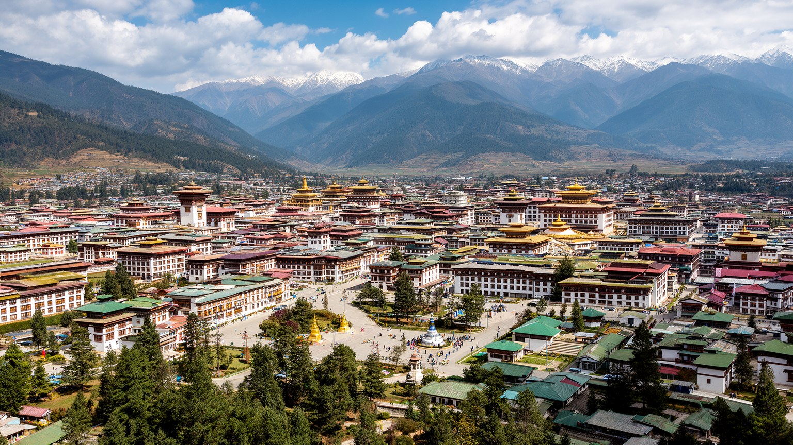
🇧🇹 ブータン王国 / 首都 / World City Atlas
ヒマラヤの谷に置かれたブータンの政治、宗教、教育、若者文化の中心です。王政と議会制、タシチョ・ゾン、僧院、行政、都市成長、山村とのつながりが、静かな首都の密度を作っています。
都市の骨格
ティンプーは空港を持たず、ワン・チュ川の谷に沿って伸びる首都です。行政、仏教、王室、教育、若者の仕事、山村からの移動が近い距離で重なり、ブータンの近代化をゆっくり見せています。
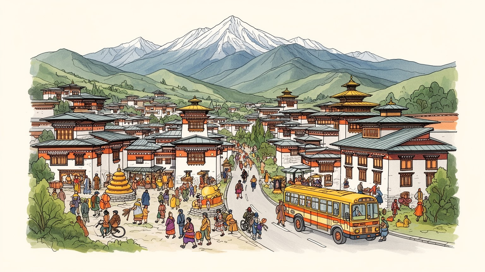
ティンプーはインドと中国に挟まれた内陸王国の判断が集まる首都です。外交、防衛、開発援助、国境、電力輸出が日常行政と近く結びます。谷の静けさの奥に、小国が主権を保つ緊張があります。慎重な均衡も続きます。
行政、教育、観光、建設、小売、手工芸、サービス業が雇用を作ります。地方から若者が集まり、公務員志向と民間起業が並びます。水力発電は国を支えますが、首都では住宅費と職探しが現実の課題です。格差も見えます。
チベット仏教、ゾン、僧院、ツェチュ、民族衣装、国王への敬意が都市の礼儀を形作ります。テレビやSNSで若者文化も広がり、信仰と現代生活は対立せず調整されます。祈りの音が行政街にも届く首都です。日常に深く続きます。
旅行者はタシチョ・ゾン、大仏、仏塔、週末市場、僧院を訪れます。住民は学校、役所、渋滞、家賃、冬の寒さ、山村の親族を使い分けます。観光の静かな景色の内側に、成長する首都の日常があります。歩くほど見えます。
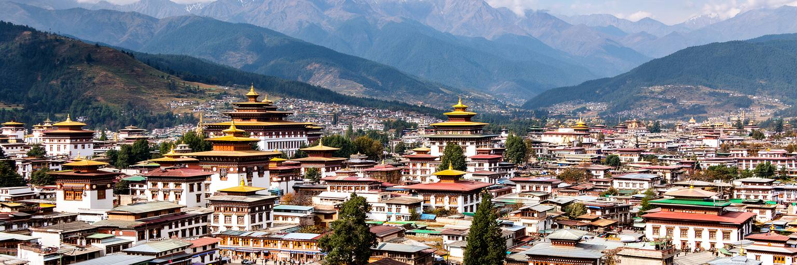
ティンプーを理解する入口は、ワン・チュ川に沿った細長い谷です。市街は標高二千メートルを超える高地にあり、北のデチェンチョリンから南のバベサ方面へ、道路、行政施設、住宅、学校、店が谷底と斜面に沿って伸びます。大平原の首都のように放射状へ広がるのではなく、山、川、橋、斜面、限られた平地が都市の形を決めています。この地形は美しい眺望を与える一方、道路渋滞、宅地不足、排水、斜面開発、寒暖差を日常の問題にします。パロ空港から車で入ることも、ティンプーの性格をよく示します。首都でありながら航空交通の玄関を隣谷に頼り、訪問者は山道を越えて政治中心へ向かいます。谷の都市は、国家の集中を可視化します。省庁、王室関連施設、議会、学校、病院、商店が近い距離に集まり、地方から来た人の生活もここに重なります。山に囲まれた小さな首都だからこそ、成長の圧力はすぐに景観と暮らしに表れます。ティンプーの地形は、静かな背景ではなく、行政、観光、住宅、交通を毎日調整させる都市の骨格です。谷の幅を意識して歩くと、ブータンの近代化が限られた空間で慎重に進められていることが分かります。斜面の住宅から中心部を見下ろす視線も、首都の小ささと近さを実感させます。谷の端から端までが生活圏であり、国の意思決定も毎日の買い物も同じ道筋を通ります。
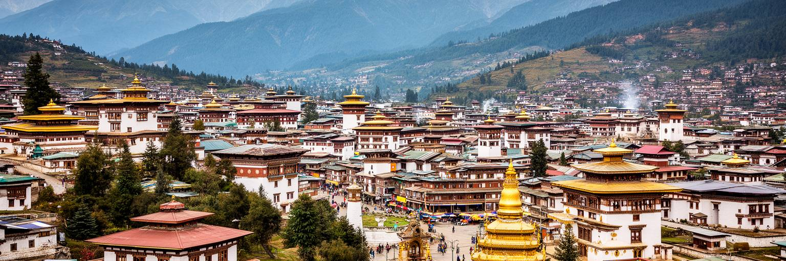
ティンプーでは、仏教が観光用の飾りではなく、国家と生活の時間を整える力として見えます。タシチョ・ゾンは行政と僧団の象徴的な空間であり、仏塔、僧院、マニ車、祈りの旗は通勤や買い物の途中にも現れます。ブータンの近代化は、宗教を古いものとして退けるより、王室、僧団、行政、学校、地域社会の間で位置づけを調整しながら進んできました。ツェチュの仮面舞踊や祝祭は、住民にとって信仰、家族、服装、季節、観光収入を結ぶ時間です。若者の生活にはスマートフォン、海外教育、ポップ音楽、カフェもありますが、礼儀、民族衣装、寺院参拝、祖先への記憶は日常の中に残ります。宗教が強い都市は閉じて見えることもありますが、ティンプーでは信仰が公共空間の静けさや共同体の作法を支える側面も大きいです。一方で、都市化が進むと、僧院の周囲の静けさ、祭礼の交通、若者の価値観、観光客の振る舞いをめぐる調整も必要になります。ティンプーの仏教性は、過去を保存するだけではなく、現代の国家が何を幸福と呼ぶかを問い続ける枠組みです。祈りの場と役所が近いことは、この首都の政治と倫理の距離を物語っています。朝夕に仏塔を回る人々や、路上で経を唱える高齢者の姿は、都市の速さを少し緩めます。公共の礼儀が信仰に支えられている感覚も、この街を歩くと自然に伝わります。
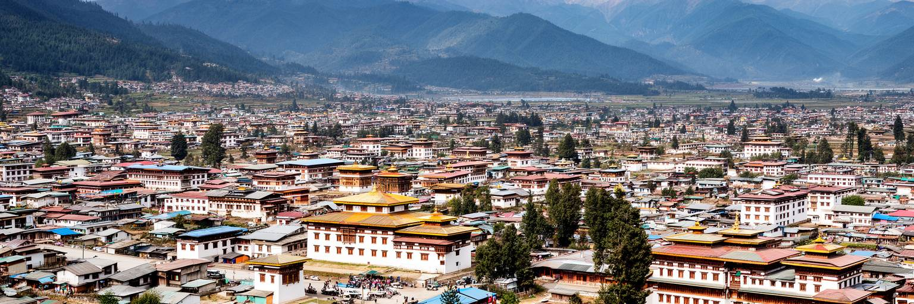
ティンプーは静かな山の首都という印象を持たれますが、ブータンで最も強く都市成長を受けている場所です。地方からの進学、就職、行政手続き、医療、商業の集中により、住宅、交通、学校、上下水道、廃棄物処理の需要が増えています。トロンデの計画区域は広くありません。谷底に新しい集合住宅が建ち、南北の道路に車が集中し、斜面にも宅地が広がります。都市化は生活の便利さを高め、雇用や教育の機会を増やしますが、同時に家賃の上昇、渋滞、大気汚染、緑地の減少、川沿いの環境負荷を生みます。ブータンは国民総幸福量を掲げる国として知られますが、首都の成長は幸福を測る難しさを具体的に示します。便利さ、所得、教育だけでなく、静けさ、共同体、景観、宗教的な時間も生活の質に含まれるからです。ティンプーの都市計画は、単に建物を増やす作業ではありません。限られた谷で、どの地区に密度を許し、どこに川や斜面の余白を残し、公共交通や歩行者空間をどう整えるかを決める仕事です。成長が続くほど、首都は地方の未来を吸い寄せます。その力を放置すれば一極集中になり、丁寧に扱えば全国の人材と文化を結ぶ場になります。新しい地区の計画には、学校、公園、バス、排水を同時に考える視点が欠かせません。建物の高さや外観だけでなく、日々の移動時間と近隣の安心が都市の質を決めます。
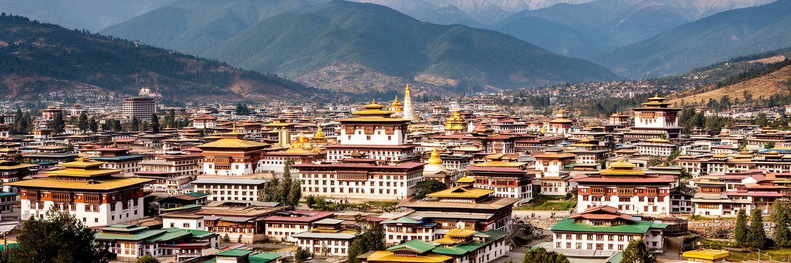
ティンプーはブータンの政治制度が最も見えやすい場所です。二十世紀半ばに首都機能が移り、王室、中央省庁、議会、裁判所、外交団、国際機関がこの谷に集まりました。ブータンは絶対王政から立憲君主制と議会制民主主義へ移行しており、その変化は急な断絶ではなく、王室の強い正統性と慎重な制度設計の上に進められました。国王への敬意は現在も深く、同時に選挙、政党、議会審議、地方自治が国家運営の一部になっています。ティンプーの政治空間では、伝統的な建築様式の庁舎と現代的な行政実務が重なります。政策の議論は、教育、若者の雇用、観光、環境、国境、インドとの関係、水力発電、デジタル化へ広がります。小国の首都では、政治家、官僚、僧侶、学校関係者、商店主、国際協力の専門家の距離が近く、政策の影響も社会に早く伝わります。一方で、首都に権限と雇用が集中することは、地方との格差を生む可能性もあります。ティンプーを読む時、王政の儀礼だけを見ても、民主化の制度だけを見ても足りません。両者が同じ都市空間でどう信頼を作り、変化を管理しているかを見ることが重要です。国会や省庁の近くを通る学生や店員の日常は、政治を遠い舞台にしません。小さな社会では評判と説明責任が近く、制度の変化も人々の会話に早く入り込みます。首都の近さが政治を身近にします。
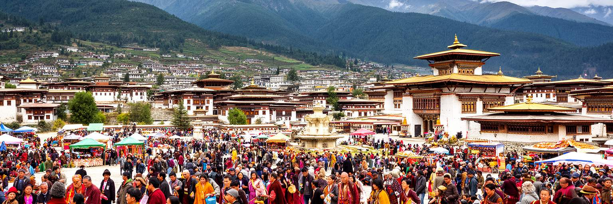
ティンプーの文化を強く感じる時間の一つが、ツェチュなどの祭礼です。仮面舞踊、僧侶、音楽、色鮮やかなキラやゴ、家族連れ、観光客が集まり、宗教的な功徳、地域の社交、国家的な表象が同じ場で重なります。祭りは古い伝統の再現に見えますが、実際には現代都市の中で人々が自分の帰属を確認する時間です。地方から移ってきた住民も、首都で働く公務員も、学生も、店主も、装いと祈りを通じてブータンらしさを共有します。都市化が進むほど、こうした行事は単なる年中行事ではなく、変化の中で共同体をつなぐ役割を持ちます。ティンプーの文化は祭礼だけに限られません。伝統工芸学校、織物、弓術、民俗音楽、映画、放送、書店、カフェ、若者のファッションが混じり、国の文化政策と市場の感覚が接します。観光は文化を外へ伝える大きな窓ですが、過度に演出されれば住民自身の意味が薄れます。祭礼の価値を保つには、見せることと祈ること、経済と信仰、若者の参加と年長者の記憶を丁寧につなぐ必要があります。ティンプーでは、文化が博物館の中だけでなく、服装、言葉遣い、祝祭の混雑、家族写真、寺院への寄進に生きています。テレビ放送や映画、音楽イベントも、伝統を固定せず新しい表現へ開いています。都市の若者が祭礼を撮影して共有することも、継承の一つの形になっています。
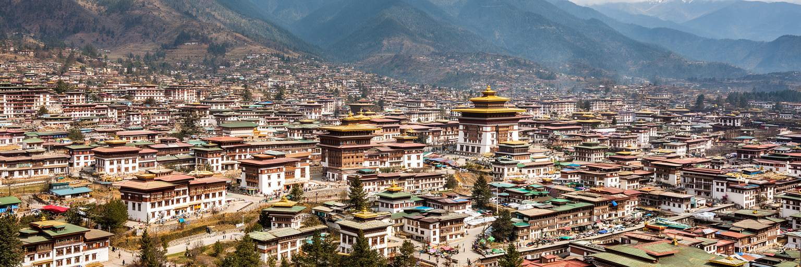
ティンプーの日常は、旅行者が見る寺院やゾンの景色だけでは語れません。住民にとって首都は、家賃、通勤、学校、買い物、役所、診療、親族訪問、冬の暖房、雨季の道路をやりくりする生活の場です。地方から来た若者や家族は、仕事や教育の機会を求めて谷に集まりますが、住宅の選択肢は限られ、家賃や土地価格は大きな負担になります。新しい集合住宅は増えていますが、交通、駐車、日当たり、断熱、上下水道、近くの遊び場が十分でない場所もあります。首都で暮らすことは、便利さと費用の交換です。中央病院、大学、行政機関、店が近い一方、地方の広い土地や親族の助けから離れる人もいます。ブータンの社会では家族や地域のつながりが重要ですが、都市化はその支え方を変えています。共働き、若者の単身生活、子育て、介護、国外移住を考える家族が増える中で、ティンプーの住宅政策は社会政策そのものになります。住まいが安定しなければ、教育や雇用の機会も十分に生かせません。観光客には穏やかな首都に見えても、毎日の暮らしでは渋滞や家計が大きな話題です。谷の限られた空間で、誰が住み続けられるかが都市の公平さを測ります。冬の朝に水道や暖房を気にし、夕方に子どもの迎えと買い物を済ませる時間は、どの都市にもある生活の重さです。ティンプーの落ち着きは、その実務の上に成り立っています。
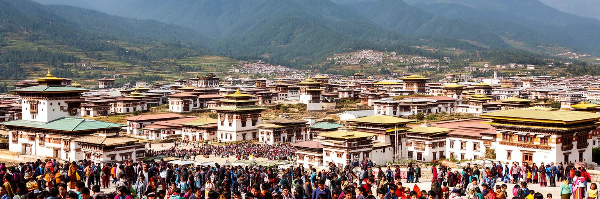
ティンプーはブータンの若者にとって、学ぶ場所であり、働く場所であり、外の世界へつながる入口です。学校、大学、研修機関、政府機関、民間企業、国際協力の事務所、カフェ、スポーツ施設が集まり、地方から進学や就職のために多くの若者が来ます。英語教育、スマートフォン、韓国やインドの映像文化、海外留学、SNSは、若い世代の感覚を大きく広げています。同時に、公務員の枠は限られ、民間雇用や起業はまだ成長途上で、若者の失業や国外移住は重要な課題です。ティンプーの街角では、民族衣装を着て通学する学生と、現代的な音楽やファッションを楽しむ若者が同じ空間にいます。この併存は矛盾ではなく、ブータンの近代化の現実です。教育が広がるほど、若者は伝統を学ぶだけでなく、環境、ジェンダー、仕事の意味、幸福、政治参加についても考えます。首都はその議論が最も集まりやすい場所です。カフェや図書館、学校の廊下で交わされる会話は、将来の国づくりにつながります。若者に機会を作るには、資格だけでなく、実務経験、手頃な住まい、交通、文化活動、精神的な支援が必要です。ティンプーの未来は、若者がこの谷に希望を持てるかどうかに大きく左右されます。海外へ出る選択が増えるほど、戻りたいと思える仕事と住環境の重要性も増します。首都の小さな起業や創作の場は、その受け皿として育つ可能性を持っています。
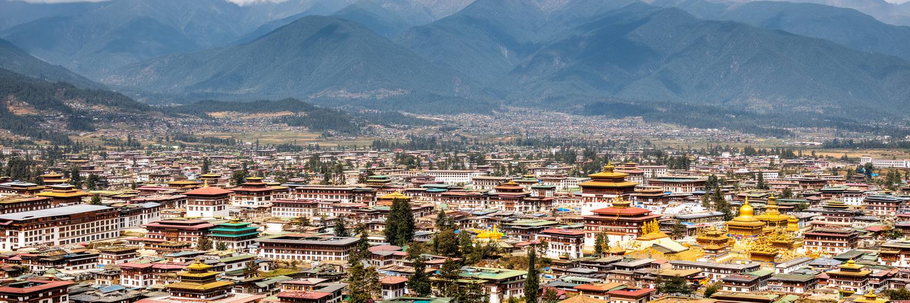
ティンプーの気候は、標高の高さと谷の地形に強く左右されます。夏は比較的涼しく、雨季には山と川の緑が濃くなりますが、冬は乾いて冷え込み、朝晩の霜や暖房が生活の実感になります。南アジアの首都という言葉から想像する暑さとは違い、ティンプーでは日差しの強さと空気の冷たさが同時にあります。気候は観光の季節、学校生活、建設工事、道路維持、農村からの物資、衣服、住宅の断熱に影響します。谷底に車と建物が増えるほど、大気の滞留や粉じん、暖房燃料、工事の土ぼこりも気になります。山に囲まれた都市では、気候変動も遠い話ではありません。極端な雨、斜面の崩れ、川沿いの浸水、上流域の水管理は、都市の安全に直結します。ブータンは環境保全を重視する国として知られますが、首都の毎日はその理念を試す場所です。公共交通、歩ける街路、緑地、川沿いの保全、エネルギー効率の良い住宅は、景観を守るだけでなく、住民の健康を支えます。ティンプーの澄んだ空気と山の眺めは大切な資産ですが、成長の速度が速ければ簡単に損なわれます。谷の気候を読むことは、首都の持続可能性を読むことでもあります。雨季の水たまりや冬の凍結は、歩道や排水の弱さをすぐに示します。気候に合わせた住宅と交通を整えることが、山の首都の生活を守ります。季節ごとの服装も街の表情を変えます。
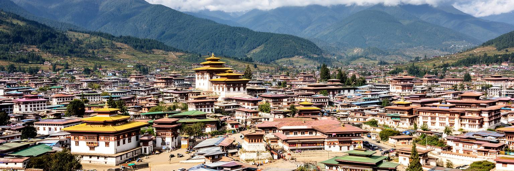
ティンプーの観光は、派手な消費都市を歩く旅ではありません。タシチョ・ゾン、メモリアル・チョルテン、クエンセルポダンの大仏、チャンガンカ・ラカン、週末市場、伝統工芸の施設を巡ると、宗教、行政、日常が近い距離にあることが分かります。ブータンの観光政策は長く、高付加価値で環境と文化への負荷を抑える方向を重視してきました。そのためティンプーを訪れる旅は、数を競う観光ではなく、滞在の意味を深める観光として設計されやすいです。観光収入はガイド、運転手、ホテル、飲食、工芸、農産物に広がりますが、同時に寺院の静けさ、祭礼の意味、住民の生活リズムを守る配慮が必要です。写真を撮る場所にも祈りの時間があり、観光客の視線と信仰者の行為が重なります。ティンプーでは、観光名所が市民生活から完全に切り離されていません。仏塔では住民がコラをし、市場では地元の野菜やチーズが売られ、行政街では普通の手続きが進みます。この近さが魅力であり、注意点でもあります。観光が持続するには、静けさを商品化しすぎず、地域の人が使う場所として尊重する必要があります。山の首都をゆっくり歩く旅は、ブータンの価値観を急がず理解する入口になります。ガイドの説明、寺院での作法、地元の食事、工芸品の背景を丁寧に知るほど、短い滞在でも街の厚みが見えてきます。観光は消費よりも学びに近い経験になります。
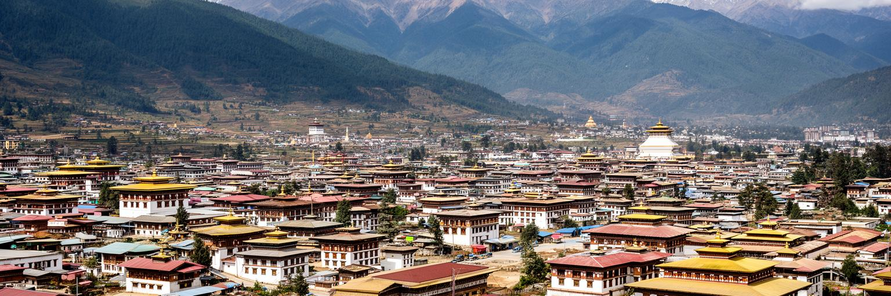
ティンプーは首都であると同時に、山村からの人、食べ物、祈り、親族関係が集まる場所です。週末市場にはチーズ、唐辛子、野菜、米、果物、乾物、手工芸品が並び、農村の季節が都市の台所へ届きます。地方から来た学生や公務員は、首都で働きながら村の家族、土地、祭礼、相続、農作業と関係を保ちます。ブータンの都市化は、農村との断絶ではなく、移動と送金と儀礼を通じた再編として進んでいます。ティンプーで収入を得た人が村の家を支え、村の親族が子育てや食料で助けることもあります。一方で、若者が都市へ集中すれば、農村の高齢化、耕作放棄、地域行事の担い手不足が進みます。首都の成長は、地方の衰退と表裏になり得ます。だからティンプーの政策を考える時、都市内の住宅や道路だけでなく、全国の地域機会をどう残すかも重要です。道路網、通信、教育、医療、地域産品の市場が整えば、都市と農村の関係は一方的な吸い上げではなくなります。週末市場を歩くと、ティンプーが単独で成り立つ都市ではないことが見えてきます。谷の首都は、山地の村々の労働と記憶を受け取りながら、国全体の生活をつなぐ結節点になっています。市場の値段や品ぞろえは、天候、道路、燃料費、農家の高齢化を映します。都市の食卓を読むことは、山村の変化を読むことでもあります。親族の訪問もその結び目です。
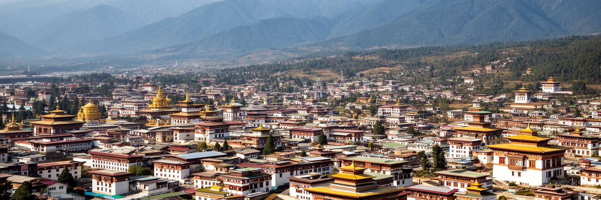
ティンプーを読む面白さは、静けさと変化が同じ谷に収まっていることです。タシチョ・ゾン、仏塔、僧院、王室と議会の制度は、ブータンの歴史と信仰を強く示します。一方で、集合住宅、渋滞、若者の就職、国外留学、SNS、建設現場、家賃の上昇は、首都が現代の課題を避けられないことを示します。大都市のような圧倒的な規模はありませんが、小国の政治、宗教、教育、観光、農村との関係が近い距離で見えるため、都市の密度は高いです。ブータンは国民総幸福量という言葉で知られますが、ティンプーを歩くと、それが単なる理念ではなく、住宅、交通、環境、文化、仕事、精神的な安心をどう両立させるかという現実の問いだと分かります。インドと中国に挟まれた地政学、王政と民主制の調整、仏教的価値と若者文化の併存、山村から首都への移動が、街路の中でつながります。ティンプーは変化を急ぎすぎないように見えますが、実際には限られた谷で多くの選択を迫られています。この首都を理解するには、寺院の静けさだけでなく、市場、学校、住宅地、道路、行政庁舎を同じ物語として読むことが大切です。そこに、ブータンの現在が最もよく表れています。小さな首都を丁寧に見るほど、国家の理念と生活の実務が離れていないことに気づきます。ティンプーは穏やかに見えますが、未来をめぐる判断はすでに街の隅々で始まっています。